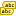
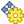

4 Cоздание тематических карт
Важной частью географических информационных систем является возможность визуализации информации. Графический анализ позволяет устранить ошибки данных или выявить закономерности. Раздел посвящен возможностям визуализации в программе QGIS. Для выполнения заданий из этого раздела загрузите необходимые файлы. Обратите внимание, загруженные файлы сохранены в формате GeoPackage (расширение .gpkg). Особенности этого формата рассмотрены в приложении (Приложение A).
Исходные данные представлены четырьмя векторными слоями, которые содержат информацию о части Мининского лесничества, Караульного участкового лесничества:
- kvartala.gpkg - границы кварталов;
- videla.gpkg - границы лесных выделов с таксационными характеристиками;
- roads.gpkg - дороги;
- rivers.gpkg - реки.
Перечисленные слои будут использоваться для создания тематических карт.
Создайте новый проект:
- Создайте новую папку проекта под названием “Раздел 4” а так же новый проект в QGIS;
- Загрузите файлы в QGIS;
- Задайте систему координат проекта EPSG:32646;
- Сохраните файл проекта в папку проекта.
4.1 Система координат проекта
Системы координат подразделяются на географические и спроецированные. Геогрифические системы рассматривают землю как объемную фигуру (эллипсоид), спроецированные делят поврехность зелмли на равные части (зоны) и рассматривают каждую зону как проекцию на плоскость. Как следствие, различаются единицы измерения координат. Положение точки в географической системе координат определеяется в угловой мере (градусы, минуты и секунды) по широте и долготе. В спроецированной системе координат положение точки определяется на плоскости (декардова система координат) и выражается в километрах по оси Х и У. Среди географических систем координат наиболее распространена WGS 84 (EPSG:4326), на основе которой построена спроецированная система координат UTM (EPSG:32xxx). Система координат UTM делит поверхность земли по экватору на 60 зон а так же на северное и южное полушарие. Например, система координат WGS 84 / UTM zone 46N (EPSG:32646) представляет 46 зону северного полушария (буква N в названии зоны указывает на полушарие). Для интернет-карт повсеместно распространено использование системы WGS 84 / Pseudo-Mercator (EPSG:3857) которая так же называется Web Mercator, которая была разработана компаний Google и является одновременно географической (для мелкого масштаба) и спроецированной (для крупного масштаба).
Систему координат WGS 84 / Pseudo-Mercator (EPSG:3857) удобно ипользовать в качестве системы координат проекта, но не следует создавать слои в этой системе координат. Для этих целей используйте WGS 84 или UTM (См. Приложение B).
В программе QGIS реализовано перепроецирование “на лету” (on fly). Векторные слои могут иметь различные системы координат, но в основном окне программы они отображаются согласованно - в одной и той же системе координат проекта. Для изменения системы координат проекта выберите “Проект” > “Свойства” > “СК” или нажмите на символ в правом нижнем углу. После чего появится окно с настройками системы координат Рисунок 4.1.

У каждой системы координат существует уникальный номер EPSG, который удобно использовать для поиска. Изображение в правом нижнем углу окна показывает область действия системы координат на поверхности земли. Текущее положение основного окна карты отображено перекрестием, область действия - красной заливкой, что особенно удобно при выборе нужной зоны спроецированной системы координат. Что бы назначить выбранную систему координат в качестве системы координат проекта нажмите “Применить” > “ОК”, изображение в главном окне программы изменится согласно выбранной системе координат.
Какая зона UTM подходит вашему проекту? Выберите подходящую систему координат и задайте ее как систему координат проекта:
- WGS 84 / UTM zone 45N (EPSG:32645);
- WGS 84 / UTM zone 46N (EPSG:32646);
- WGS 84 / UTM zone 46S (EPSG:32746).
Координаты положения курсора отображаются посередине в нижней части главного окна программы  . Формат отображаемых координат настраивается в меню “Проект” > “Свойства…” > “Общие” > “Отображение координат…”. Географические координаты могут быть отображены в десятичных градусах, градусах и минутах или градусах, минутах и секундах (пункт “Формат”). Там же настраиваются единицы измерения: метры или градусы и точность координат.
. Формат отображаемых координат настраивается в меню “Проект” > “Свойства…” > “Общие” > “Отображение координат…”. Географические координаты могут быть отображены в десятичных градусах, градусах и минутах или градусах, минутах и секундах (пункт “Формат”). Там же настраиваются единицы измерения: метры или градусы и точность координат.
4.2 Обычные подписи
Подписи объектов существенно увеличивают информативность карты. Они настраиваются отдельно для каждого слоя в контекстном меню “Свойства…” > “Подписи”. Существует несколько режимов отображения подписей:
- “Без подписей” ;
- “Обычные подписи” ;
- “Подписи на основе правил” ;
- “Препятствие для подписей” .
В этом и следующем подразделах будут рассмотрены “Обычные подписи” и “Подписи на основе правил”. Рассмотрим подписи объектов на примере слоя “kvartala” (проект с этим слоем был создан в начале раздела). При настройке “Обычных подписей” основным параметром является “Значение”, которым будет подписан каждый объект в этом слое. Слой лесных кварталов содержит поле “kvartal” в котором записан номер квартала для каждого объекта. Именно это поле указывается в пункте “Значение”. Таким образом каждый квартал получает подпись из соответствующего поля атрибутивной таблицы - номер квартала ?fig-labels.
Остальные настройки не влияют на содержание подписей, только на их оформление. Внесенные изменения сразу отображаются в верхней части окна под названием “Образец текста”. Пункт “Текст” позволяет настроить шрифт, размер и цвет текста. “Форматирование” настраивает регистр, отступы, перенос подписей по строкам, форматы чисел. Крайне полезными настройками является и “Фон”, позволяющие строить буфер (по умолчанию белого цвета) вокруг подписей, так повышается их видимость на фоне других объектов. Пункт “Размещение” настраивает положение подписей относительно объекта. Чаще всего подписи размещают на некотором расстоянии от точечных объектов или внутри полигонов. “Отрисовка” позволяет задать масштаб карты для отображения подписей (Рисунок 4.2).
{kind=link}
{kind=link}
{kind=link}
{kind=link}
{kind=link}
При большом количестве подписей они могут накладываться друг на друга. В этом случае по умолчанию часть подписей не будет видна, что бы изменить это поведение перейдите в пункт “Настройки автоматического размещения подписей”  в правом верхнем углу окна и поставьте чек-бокс “Показывать все подписи для всех слоев (включая наложения)”.
Измените подписи слоя “kvartala”. Установите размер шрифта 20, цвет текста - коричневый, включите буфер вокруг подписей.
В некоторых случаях требуется отобразить подписи сразу из нескольких полей, например номер выдела и площадь. Настроить такую подпись возможно в редакторе выражений  (левый верхний угол окна). Для примера используем слой “videla”. Создадим подписи из полей “videl” (номер выдела) и “s_ha” (площадь выдела в гектарах). Перейдите в окно “Построитель выражений” в центральной части в пункте “Поля и значения” найдите поля “videl” и “s_ha”. После двойного клика они будут перенесены в левую часть окна, где и формируется выражение. Разделите их символом “Сцепление строк”
(левый верхний угол окна). Для примера используем слой “videla”. Создадим подписи из полей “videl” (номер выдела) и “s_ha” (площадь выдела в гектарах). Перейдите в окно “Построитель выражений” в центральной части в пункте “Поля и значения” найдите поля “videl” и “s_ha”. После двойного клика они будут перенесены в левую часть окна, где и формируется выражение. Разделите их символом “Сцепление строк” || что бы получилось следующее выражение: 'выдел ' || "videl" || ' площадь ' || "s_ha" (Рисунок 4.3). Результат выражения отображается в нижней левой части окна, пункт “Просмотр:”. Если в этом пункте отображается надпись “Ошибочное выражение” следует исправить выражение.
При составлении выражения важно использовать правильные кавычки. Названия полей заключаются в двойные кавычки ("videl"), строки в одинарные ('площадь'). Неправильное использование кавычек приведет к ошибке!

Создайте подписи слоя “videla” из полей “videl” и “el_lesa” (преобладающая порода) по примеру выше.
Длинные подписи не слишком удобны, поэтому разобьем подпись на 2 строки и зададим масштаб отрисовки подписей. В окне “Подписи” перейдите во вкладку “Форматирование” и задайте “Перенос строки по символу” - \n (такое сочетание символов используется для переноса строки в HTML). Измените подпись, добавив знак переноса перед словом “площадь”: 'выдел ' || "videl" || ' \nплощадь ' || "s_ha". Программа, найдя символ переноса, разделяет подпись на две строки. При этом сам символ переноса в подписе не отображается (Рисунок 4.4).

При мелком масштабе подписи небольших объектов нечитаемы, поэтому зададим масштаб, при котором отображение подписей будет отключаться. Для этого в окне “Подписи” перейдите во вкладку “Отрисовка” и поставьте чек-бокс в пункте “Видимость в пределах масштаба”. В строке “Минимальный масштаб” задайте значение 1:4000 (Рисунок 4.5). При текущем масштабе карты менее 1:4000 подписи не будут отображаться.

По примеру выше настройте перенос и масштаб отображения подписей слоя “videla”.
4.3 Подписи на основе правил
Использование режима “Обычные подписи” удобно, когда все объекты слоя должны быть подписаны одинаково. Если же часть объектов должна остаться без подписей или подписи должны изменяться по условию - применяют режим “Подписи на основе правил”. Рассмотрим работу с этим режимом на примере слоя “videla” который содержит границы выделов и таксационную характеристику каждого из них. Основной настройкой здесь является задание логического правила, согласно которому будут подписаны объекты.
Перейдите в режим “Подписи на основе правил” и удалите текущее правило. Для этого выделите его и нажмите на символ  в левом нижнем углу (это правило было перенесено из ражима “Обычные подписи”). Добавьте новое правило нажав на символ
в левом нижнем углу (это правило было перенесено из ражима “Обычные подписи”). Добавьте новое правило нажав на символ  , после чего откроется новое окно “Edit Rule”. В пункте “Фильтр” задается правило для отображения подписей, в нижней - настраивается внешний вид.
, после чего откроется новое окно “Edit Rule”. В пункте “Фильтр” задается правило для отображения подписей, в нижней - настраивается внешний вид.
В пункте “Описание” вводится название правила. У каждого правила может быть два режима “Фильтр” и “Иначе для всех остальных объектов”. Второй пункт используется, когда создано несколько правил и требуется добавить подписи для всех остальных объектов, не входящих ни в одно из предыдущих правил. Для создания правила используется окно “Построитель выражений”  . Логические условия задаются на основе атрибутов объектов. Для примера составлено выражение в котором будут подписаны лесные выдела с площадью более 4 га:
. Логические условия задаются на основе атрибутов объектов. Для примера составлено выражение в котором будут подписаны лесные выдела с площадью более 4 га: "s_ha" > 4. Функция “Проверка” позволяет узнать количество объектов, попадающих под это условие (Видео 4.3). В пункте “Значение” задается поле, значениями из которого будут подписаны выбранные по условию выдела (в примере это поле “videl”). Более подробно создание логических выражений будет рассмотрено в последующем разделе (Глава 5).
Создайте подписи слоя “videla”. Добавьте номер выдела только для тех выделов, в которых средний возраст насаждения более 100 лет (средний возраст - поле “A_let”).
4.4 Настройки стиля объектов
Одним из ключевых имнструментов визуализиции пространственных данных является отображение объектов цветом. Все объекты слоя могут быть окрашены одинаково или иметь разные цвета в зависимости от значений атрибутов. В программе QGIS настройка стиля отображения объектов производится в контекстном меню панели слоев “Свойства…” > “Стиль”. Существует несколько режимов отображения объектов: “Без отрисовки” объекты будут не видны но надписи объектов будут отображаться; “Простая символика” задает единый стиль для всех объектов слоя; “Символизация по уникальным значениям” позволяет задать стиль отображения в зависимости от значений качественного атрибута (преобладающая порода, класс бонитета и т.д.); “Символизация по диапазонам значений” задает стиль в зависимости от количественного атрибута (средний возраст насаждения, средний диаметр, запас и т.д.). “Символизация на основе правил” позволяет задать гибкие правила для отображения стиля объектов по нескольким атрибутам. Настройка символики несколько видоизменяется в зависимости от типа геометрии слоя. Для точек будет задаваться стиль маркера, для линий - стиль линии, для полигонов - стиль заливки и обводки. Особенности геометрий объектов отражаются на особенностях их отображения. Упомянутые выше режимы отображения объектов рассмотрены далее на примере полигонального слоя “videla”.
4.5 Простая символика
В режиме “Простая символика” все объекты отображаются в одном стиле, который может быть простым (состоящим из одного слоя) так и сложным (состоящим из двух и более слоев). По умолчанию единственным слоем является “Простая заливка”. Комбинируя несколько простых слоев возможно создать сложный стиль отображения.
4.5.1 Простая заливка

Тип слоя “Простая заливка” (Рисунок 4.6) позволяет настоить основных два цвета: “Цвет заливки” и “Цвет обводки”. “Стиль заливки” может быть сплошной, без заливки или разными видами штриховки. Для обводки объектов настраивается “Толщина обводки” и “Стиль обводки” (сплошная, без линии и штриховка).
Измените “Цвет заливки” и “Цвет обводки” слоя “videla” по вашему усмотрению.
Комбинируя несколько слоев создаются сложные заливки. Для этого добавьте еще один слой нажав на символ  в правом верхнем углу. Верхний слой будет перекрывать нижний, поэтому он должен быть полупрозрачным или залит штриховкой. После настройки, изображение в квадрате слева изменится в соответствии с новым стилем штриховки Видео 4.4.
в правом верхнем углу. Верхний слой будет перекрывать нижний, поэтому он должен быть полупрозрачным или залит штриховкой. После настройки, изображение в квадрате слева изменится в соответствии с новым стилем штриховки Видео 4.4.
Объедините два слоя заливки по примеру выше. Настройки выберите самостоятельно.
Аналогичным образом комбинируются другие типы слоев. Кроме типа слоя “Простая заливка” доступны:
- “Заливка градиентом из центра”;
- “Заливка SVG узором”;
- “Заливка растром”;
- “Заливка маркерами со случайным размещением”;
- “Заливка точками”;
- “Заливка штриховкой”;
- “Градиентная заливка”;
- а так же несколько типов обводок.
4.6 Символизация по уникальным значениям
Признаки (характеристики) объектов подразделяются на два больших класса: количественные и качественные. Количественные признаки это числовые измерения характеристик объекта (например средний возраст, средняя высота, средний диаметр древостоя), качественные - принадлежность к той или иной категории (преобладающая порода, тип леса, класс бонитета).
Для отображения качественных признаков используется символизация по уникальным значениям, при этом каждому уникальному значению задается определенный стиль. Для примера слой выделов был раскрашен по преобладающей породе (поле “el_lesa”). Перейдите в пункт “Свойства слоя” > “Стиль” > “Символизация по уникальным значениям”, в пункте “Значение” указывается поле для классификации (“el_lesa”). После нажатия “Классифицировать” каждому уникальному значению поля будет присвоен определенный стиль. По умолчанию для раскраски применяются случайные цвета (“Random colors”), явно задать набор цветов возможно в пункте “Градиент” (Видео 4.5).
Выберите слой “videla” и примените режим символизации по уникальным значениям для типа леса (поле “tip_lesa”).
4.7 Символизация по диапазонам значений
Для количественных признаков применяется режим символизация по диапазонам значений. Диапазон значений признака разбивается на интервалы каждый из которых окрашивается согласно выбранному градиенту. В пункте “Значение” выбирается поле с количественными значениями, в пункте “Градиент” задается градиент цвета который может быть выбран из предустановленного списка или создан вручную по двойному клику.
Ключевым моментом является разбиение числовой переменной на классы (интервалы), которое определяется режимом (“Fixed Interval”, “Logarithmic Scale” и др.) с возможностью выбора количества классов. Увеличение количества классов приводит к более подробному отображению изменения переменной. Способ разбиения на классы часто определяется распределением переменной, которое изображено во вкладке “Диаграмма рассеяния”. После установки всех параметров и нажатия “Классифицировать”, интервалы и соответствующие им стили отображения появятся на экране в виде таблицы со столбцами “Знак”, “Значения” и “Легенда” (Рисунок 4.7).

В столбце “Знак” возможно отключить видимость отдельного интервала или изменить стиль. В столбце “Значения” отображааются границы интервала, которые возможно изменить вручную. Столбец “Легенда” отображает подписи в легенде, которые так же возможно изменить вручную.
Примените режим символизации по диапазонам значений для среднего возраста (поле “A_let”) слоя “videla”. Результат должен соответствовать рисунку ниже (Рисунок 4.8).

4.8 Cимволизация на основе правил
Символизация на основе правил по принципу своей работы схожа с режимом “Подписи на основе правил” (Глава 4.3) и позволяет гибко настроить группировку объектов по стилю. В основе этого режима лежат логические выражения, которые разбивают множество объектов на группы для каждой из которых задается свой стиль отображения.

Логические выражения (правила) добавляются при помощи символа “Добавить правило”. В пункте “надпись” задается называние для правила. В пункте “Поиск” задается логическое правило, которое определяет группу объектов, для которых будет задан стиль отображения. Пункт “Иначе для всех остальных объектов” позволяет задать стиль для объектов, не входящих ни в одну группу. Настройка “В пределах масштаба” позволяет применять стиль только для определенного диапазона масштаба. В пункте “Знак” задается стиль отображения.
Для примера окрасим сосняки более 100 лет и менее 100 лет в разные цвета. Для остальных выделов оставим видимыми только контуры. Первое правило будет иметь вид "el_lesa" = 'С' AND "A_let" < 100 (выбор выделов с преобладающей породой сосна И средним возрастом менее 100 лет). Второе правило вида "el_lesa" = 'С' AND "A_let" >= 100 задает стиль для сосняков со средним возрастом большим или равным 100 лет. В третьем правиле выбирается пункт “Иначе для всех остальных объектов” и задается стиль для всех объектов не попавших в первые два правила (Рисунок 4.9).
Повторите пример визуализации по преобладающей породе и возрасту, котороый размещен выше. Результат должен соответствовать рисунку ниже. (Рисунок 4.10)

4.9 Создание и заполнение макета
После задания соответствующего стиля объектов переходят к созданию карты. Кроме самого изображения земной поверхности карты и планы могут содержать легенду, координатную сетку, указатель северного направления, масштаб или масштабную линейку. В главном окне программы задается требуемый стиль отображения карты после чего карта оформляется в пункте меню “Проект” > “Создать макет…” вводится название макета и открывается новое окно с белым прямоугольником, который является листом будующей карты. Новые элементы добавляются в меню “Добавить элемент”, основные инструменты редактирования макета расположены в панеле слева. Добавленные элементы макета и их свойства отображаются в панеле справа “Элементы” и “Свойства элемента”.
Основным элементом макета является карта, которая добавляется в меню “Добавить элемент” > “Добавить карту” после чего выделяется область на белом листе, куда карта будет добавлена.
Печать карты производится только в границах белого листа. Элементы выходящие за эти границы не будут напечатаны.
После добавления карты новый элемент с названием “Карта 1” появится в панеле “Элементы”. Панель “Свойства элемента” позволяет изменять настройки добавленной карты (масштаб, систему координат и т.д.). Область, занятая картой, изменяется при помощи инструмента “Выделить/переместить элемент”, предвигать карту внутри области возможно при помощи инструмента “Перемещение содержимого элемента” (Видео 4.6).
Создайте новый макет. Добавьте карту так, что бы она занимала приблизительно 80% площади листа.
Аналогичным образом добавляется масштабная линейка и другие элементы. Для этого перейдите в пункт “Добавить элемент” и выберите необходимый (так же добавить большинство элементов макета возможно при помощи панели слева).
Добавьте в макет масштабную линейку, указатель “север-юг” и надпись “План лесонасаждений”.
Для настройки свойств определенного элемента его необходимо выделить в панеле “Элементы” после чего свойства появятся в окне “Свойства элемента”. После оформления карты обычно сохраняют в виде изображения. Для этого перейдите в пункт “Макет” > “Экспорт в изображение” и сохраните результат в папку проекта.
Добавьте координатную сетку на карту (система координат EPSG:4326 - WGS84). В свойствах масштабной линейки измените единицы измерения на километры. У надписи “План лесонасаждений” увеличьте размер шрифта до 30. Сохраните карту в виде изображения. Пример итоговой карты приведен на рисунке ниже (Рисунок 4.11).

Макет со всеми добаленными элементами сохраняется в файле проекта. При необходимости внесения изменений достаточно открыть сохраненный макет, внести изменения и сохранить карту повторно.
4.10 Создание плана лесонасаждений
В лесном хозяйстве широко используются планы лесонасаждений (добавить определение). Такие планы окрашиваются на основе сочетания преобладающей породы и группы возраста: молодняки; средневозрастные; приспевающие; спелые и перестойные. Создать такую классификацию возможно используя стиль “Символизация на основе правил” с вложенными условиями (Рисунок 4.12).

Легенда планов часто представлена в виде матрицы, где по вертикали указывается преобладающая порода, а по горизонтали - класс возраста. Каждому сочетанию “порода-класс возраста” соответствует определенный оттенок цвета (Рисунок 4.13).
Каждый квартал имеет подпись в виде дроби, где в числителе указывается номер квартала, а в знаменателе - площадь в гектарах. Такие подписи в QGIS возможно создать с использованием HTML-тегов: нижнее подчеркивание (<u> </u>) и перенос строки (<p>). Что бы HTML-теги начали работать, в пункте “Надписи” > “Текст” необходио поставить чек-бокс “Разрешить форматирование HTML”. Выражение '<u>' || "kvartal" || '</u><p>' || "area_ha" будет отображаться на карте в виде дроби \(\frac{номер\:квартала}{площадь,\:га}\) для каждого квартала (Рисунок 4.14).

Для подписи выделов так же используют доробь вида \(\frac{номер\:выдела - класс\:возраста}{площадь,\:га - класс\:бонитета}\), однако такая подпись занимает много место из-за чего подписи небольших выдeлов при мелких масштабах накладываются друг на друга или не отображаются (в зависимости от настроек размещения подписей) поэтому в текущем примере выдела подписываются одной цифрой - номером выдела.
4.10.1 Применение сохраненных настроек отображения
В QGIS существует возможность сохранять настройки отображения слоя (стили, подписи и др.) в отдельный файл с расшерением “.qml” а так же использовать их повторно в новых проектах. Перечисленные выше настройки плана лесонасаждений были сохранены в файлы “style_kvartala.qml” и “style_videla.qml”. Для создания плана лесонасаждений достаточно применить их к слоям “kvartala” и “videla”. Перейдите в “Свойства…” слоя > “Стиль” > “Форма” > “Загрузить стиль”. В открывшемся окне “Управление стилями” выберите и загрузите необходимый файл стиля (напротив пунктов “Стиль” и “Надписи” должны быть установлены чек-боксы). В результате к слою будут применены сохраненные ранее стили и подписи объектов (Видео 4.7).
Примените сохраненные стили “style_kvartala.qml” и “style_videla.qml” к слоям “kvartala” и “videla” соответственно, как показано выше. Результат должен соотвествовать изображению ниже (Рисунок 4.15).

4.10.2 Создание макета
После настройки стилей отображения и подписей объектов переходят к созданию макета (Глава 4.9). Планы лесонасаждений обычно печатают на листах больших форматов, следовательно для начала задается формат листа макета. Для этого нажмите на белый лист и в свойствах элемента выберите формат “А3”. Во вкладке “Направляющие” задаются параметры направляющих линий, которые позволяют разместить объекты на карте более точно. Добавим направляющие в соответствии со стандартными отступами листа (слева - 2 см, остальные стороны - 0,5 см). Для этого в пункте “Горизонтальные направляющие” добавьте две направляющих со значениями 5 и 292 мм, в пункте “Вертикальные направляющие” так же две направляющие со значениями 20 и 415 мм. После чего добавьте карту так, что бы она не выходила за пределы заданных направляющих (область карты будет “приклеиваться” к красным линиями). В свойствах карты поставьте чек-бокс напротив подпункта “Рамка”. Задайте масштаб карты 1:25 000 и разместите ее в середине листа (Видео 4.8).
По примеру выше создайте макет, настройте направляющие и добавьте карту, задайте масштаб карты 1:25 000.
4.10.3 Добавление легенды
Создать легенду в виде матрицы средствами программы QGIS не представляется возможным, однако есть возможность создать легенду в стороннем редакторе, после чего импортировать ее в программу. Рассмотрим один из таких способов в следующей последовательности:
- создание легенды в табличном редакторе (Excel, Calc и др.);
- экспорт таблицы в формат HTML;
- импорт HTML в программу QGIS.
Первые два этапа уже завершены и сохранены в файлах “Таблица условных обозначений пород.ods” и “Таблица условных обозначений пород.html”. Для импорта таблицы в макет QGIS перейдите в пункт “Добавить элемент” > “Добавить HTML” после чего выделите область макета. Перейдите в “Свойства элемента”, в пункте “Адрес” укажите путь к файлу “Таблица условных обозначений пород.html”, таблица будет добавлена в макет. Для редактирования таблицы, сначала отредактируйте файл “Таблица условных обозначений пород.ods”, сохраните в формате .html и укажите путь к новому файлу. Таблица будет заменена на отредактированную (Видео 4.9).
Оставшиеся объекты отображаются в виде отдельной легенды, для ее добавления перейдите в меню макета “Добавить элемент” > “Добавить легенду” и откройте свойства легенды (свойства элемента). Для отображения в легенде только видимых на карте объектов в подпункте “Элементы легенды” поставьте чек-бокс “Отображать только элементы в охвате карты”, после чего количество объектов в легенде уменьшится. Для возможности редактирования легенды, уберите чек-бокс “Автообновления”, после чего появится возможность редактировать элементы. Удалите лишние и переименуйте оставшиеся элементы легенды. В подменю “Свойства элемента” добавьте заголовок “Условные обозначения:” (Видео 4.10).
После оформления легенды необходимо добавить две надписи в верхней части карты:
- “ПЛАН ЛЕСОНАСАЖДЕНИЙ” - размер шрифта 30, прописные буквы;
- “Мининского лесничества, Бирюсинского участкового лесничества, Красноярского края Масштаб 1:25 000” - размер шрифта 15.
Для вывода на печать готового плана лесонасаждений выберите пункт “Макет” > “Экспорт в изображение…”.
По примеру выше добавьте легенду и надписи. Сохраните план в виде растрового изображения. Результат выполнения задания представлен на рисунке ниже (Рисунок 4.16).

Видеоинструкция создания плана лесонасаждений расположена ниже (Видео 4.11).